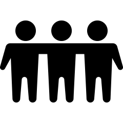

2 Research questions
In this chapter, you will learn to:
- identify and write quantitative research questions.
- identify the variables implied by a quantitative research question.
- identify and distinguish observational and experimental studies.
- identify and distinguish the units of analysis and units of observations in a study.
- write operational and conceptual definitions.
2.1 Introduction
The research question (RQ) directs all other components of the research. Since quantitative research summarises and analyses data using numerical methods (like averages or percentages), the RQ must be written carefully so it can be answered effectively. Four different types of RQs are studied:
- descriptive RQs (Sect. 2.2).
- relational RQs (Sect. 2.3).
- repeated-measures RQs (Sect. 2.4).
- correlational RQs (Sect. 2.6).
Since the RQ directs all other components of the research, writing RQs should be the first step of any research study. Specifically, RQs should be asked before data are collected.
RQs should be written before data are collected.
2.2 Descriptive RQs
All RQs identify a large group of interest to be studied (called a population), and study something about that population (called the outcome).
The population is any broad group of interest; for example:
- all German males between \(18\) and \(35\) years of age.
- all bamboo flooring materials manufactured in China.
- all elderly females with glaucoma in Canada.
- all Pinguicula grandiflora growing in Europe.
Definition 2.1 (Population) A population is a group of individuals from which the total set of observations of interest could be made, and to which the results will generalise.
Populations comprise many individuals (or cases). If the individuals are people, individuals may also be called subjects.
The words population, individuals and cases do not just refer to people, though they may be commonly used that way in general conversation.
Data are rarely taken from all the individuals in the population: all individuals are rarely accessible in practice. For example, testing a new drug cannot possibly study all people who might use the drug (some may not even be born yet). In contrast, a sample is a subset of the population from which data are obtained (Chap. 6). Countless samples are possible from any given population, but only one is studied.

Definition 2.2 (Sample) A sample is a subset of individuals from the population. The data are collected from the sample.
The population in an RQ is not just those studied; it is the whole group to which results could generalise.
Example 2.1 (Samples) A study of American college women (Woolf et al. 2009) compared iron status in highly-active and sedentary women.
The study compared \(28\) active and \(28\) sedentary American college women, from which data were collected. The population was all active and sedentary American college women. The group of \(56\) subjects was the sample.
Descriptive RQs study something about the identified population, called the outcome. Because the RQ concerns a large group (the population), the outcome numerically describes a group of individuals (not single individuals). The outcome is, for example, an average or proportion summarising a group of individuals.
Definition 2.3 (Outcome) The outcome in an RQ is the result, output, consequence or effect of interest in a study, numerically summarised for a group of individuals.
The outcome of interest in a population may be (for example) the
- average amount of wear after \(1\,000\,\text{h}\) of use.
- proportion of people whose pupils dilate.
- average weight loss after three weeks on a diet.
- percentage of seedlings that die.
The outcome in an RQ summarises a population; it does not describe the individuals in the population.
Descriptive RQs can now be introduced.
Definition 2.4 (Descriptive RQ) Descriptive RQs have a population and an outcome.
Some RQs ask about the value of some population quantity (such as: what is the average internal body temperature?); these are called estimation RQs. Some RQs require making a decision about the population (such as: is the average internal body temperature the same for females and males?); these are called decision-making RQs. Descriptive RQs have one of these forms, depending on what information is sought (Sect. 2.8):
- estimation RQs: Among {the population}, what is {the outcome}?
- decision-making RQs: Among {the population}, is {the outcome} equal to {a given value}?
These templates are not 'recipes', but guidelines.
Answering estimation descriptive RQs is studied in Chaps. 22 and 23. Answering decision-making descriptive RQs is studied in Chaps. 26 and 27.
Example 2.2 (Descriptive RQ) Mackowiak, Wasserman, and Levine (1992) studied men and women aged \(18\) to \(40\); this is the population. The outcome of interest in this population is the average body temperature. The sample comprised \(148\) 'healthy men and women' aged \(18\) to \(40\). One descriptive RQ was:
What is the average body temperature?
This is an estimation RQ. They also studied a decision-making descriptive RQ (where \(98.6\)oF (or \(37.0\)oC) is a commonly-accepted value for the internal body temperature):
Is the average body temperature really \(98.6\)oF (\(37.0\)oC)?
2.3 Relational RQs
Studying relationships usually is more interesting than simply describing a population. Relational RQs compare the outcome for groups of different individuals in the population, or compare two different sub-populations. These comparisons are called between-individuals comparisons, as they compare the outcome between (or among) groups of different individuals. Examples include:
- comparing the average amount of wear in floorboards between two different groups: standard wooden floorboards, and bamboo floorboards.
- comparing the average heart rate across three groups of people: those not receiving the drug, those receiving a weekly dose, and those receiving a daily dose of the drug.
Definition 2.5 (Comparison (between individuals)) The between-individuals comparison in an RQ identifies the small number of groups of different individuals for which the outcome is compared.
Example 2.3 (Between-individuals comparison) J. L. Williams et al. (2022) compared the average weight of female and male Leadbeater's possums. 'Sex of the possum' is the between-individuals comparison; average weight is the outcome.
Relational RQs can now be introduced.
Definition 2.6 (Relational RQ) Relational RQs have a population, outcome, and a between-individuals comparison.
Relational RQs have one of these forms, depending on what information is sought:
- estimation RQ: Among {the population}, what is the difference in {the outcome} for {the groups being compared}?
- decision-making RQ: Among {the population}, is {the outcome} the same for {the groups being compared}?
Example 2.4 (Relational RQ) Consider this RQ (based on Estévez-Báez et al. (2019)):
Among Cubans between \(13\) and \(20\) years of age, is the average heart rate the same for females and males?
The population is 'Cubans \(13\) and \(20\) years of age', the outcome is 'average heart rate', and the between-individuals comparison is between two separate groups: 'between females and males'. This is a relational RQ.
This is a decision-making RQ, since it asks if the average heart rate is the same for females and males. An estimation-type relational RQ would ask about the size of difference in the average heart rate between females and males.
2.4 Repeated-measures RQs
Rather than comparing the outcome for groups of different individuals, repeated-measures RQs compare the outcome multiple times within the same individuals.
These comparisons are called within-individuals comparisons, as they compare the outcome within the same individuals, not across groups of different individuals. The multiple measurements may be different points in time (e.g., the height of the same trees at one, two and five years after planting), but do not have to be time points.
Examples include:
- comparing the average strength of hind legs of horses to the forelegs of the same horses.
- comparing the average thickness of the cornea in left eyes and right eyes of the same individuals.
- comparing the average amount of wear in many individual floorboards after one, five and ten years of use.
Definition 2.7 (Within-individuals comparison) The within-individuals comparison in the RQ identifies the small number of different, distinct situations for which the outcome is compared for each individual.
Example 2.5 (Between- and within-individual comparisons) Consider comparing the strength of the dominant and non-dominant legs of professional football players.
A between-individuals comparison would compare the average strengths of the dominant and non-dominant legs between different groups of footballers: one group would have their dominant-leg strength measured, and the other would have their non-dominant-leg strength measured. This is a between-individuals comparison.
In contrast, the strengths of the dominant and non-dominant legs could be recorded on the same individuals. This study examines within-individuals changes: the average differences between the strengths of the dominant and non-dominant legs within the same individuals. In this study, no between-individuals comparison exists: different groups are not being compared.
Studies may use both within- and between-individuals comparisons (see Sect. 30.8). For instance, a study may examine the change in individuals' heart rate (the within-individuals comparison), for two drugs given to different groups (the between-groups comparison).
Repeated-measures RQs can now be introduced.
Definition 2.8 (Repeated-measures RQ) Repeated-measures RQs have a population, outcome and a within-individuals comparison.
Repeated-measures RQs have one of these forms, depending on what information is sought:
- estimation RQ: Among {the population}, what is the change in {the outcome} for {the alternatives being compared within individuals}?
- decision-making RQ: Among {the population}, is {there a change in the outcome} for {the alternatives being compared within individuals}?
Example 2.6 (Repeated-measure RQ) Rowland, Briscoe, and Handasyde (2017) compared the temperature in the same tree hollows in summer and winter:
For tree hollows in the Strathbogie Ranges, Australia, what is the average temperature difference between summer and winter?
The comparison is within individuals, as the temperature is measured for the same tree hollows at the two times. This is a repeated-measures, estimation-type RQ.
Repeated-measures RQs with only two within-individual comparisons are often called paired.
Example 2.7 (Paired repeated-measures study) D. A. Levitsky, Halbmaier, and Mrdjenovic (2004) compared the weights of the same university students at the beginning of university, and then after \(12\) weeks. The comparison is within individuals, and the study is a repeated-measures study. Since each student has a pair of weight measurements, this is a paired study.
2.5 Variables
RQs are about populations. However, the data to answer an RQ come from individuals in that population. The aspects or characteristics that can vary called variables.
Definition 2.9 (Variable) A variable is a single aspect or characteristic, associated with the individuals, whose values can vary.
Example 2.8 (Variables) Examples of variables include: the duration of cold symptoms; sex; tree girth; response to a survey question (Yes, Maybe, No); city of birth; hair colour.
Some variables change from one individual to another individual, such as sex and height. These are called between-individuals variables. In repeated-measures studies, some variables of interest change over repeated measurements from the same individuals; these are called within-individuals variables.
Definition 2.10 (Between- and within-individuals variables) Between-individuals variables vary from one individual to another individual. Within-individuals variables vary from one recording or measurement to another within the same individuals.
A between-individuals variable is a single aspect that can vary from individual to individual. While your city of birth does not change, 'city of birth' is a variable because it varies from individual to individual.
Example 2.9 (Within-individuals variables) Rowland, Briscoe, and Handasyde (2017) compared the temperature in the same tree hollows in summer and winter (Example 2.6). The comparison is within individuals: the temperature is measured for the same tree hollows (the individuals) at two different times.
'Season' is a within-individuals variable, as each tree hollow is studied for two different seasons. 'Temperature' is also a within-individuals variable, as it is measured twice for each tree hollow.
Example 2.10 (Between-individuals comparison) J. L. Williams et al. (2022) compared the average weight of female and male Leadbeater's possums (Example 2.3).
'Sex of the possum' is a between-individuals variable; it can vary from possum to possum. 'Weight' is also a between-individuals variable; it can vary from possum to possum.

Example 2.11 (Variables) 'Duration of cold symptoms' is a between-individuals variable: its value can vary from individual to individual. The 'average duration of cold symptoms' is the outcome, a numerical summary of many individuals' cold durations.
While many variables can be recorded, two essential variables are (Table 2.1):
- the response variable, which records information to determine the outcome.
- the explanatory variable, which records information to determine the comparison.
Usually, one variable can be considered as perhaps influencing the value of the other variable. This variable is called the explanatory variable (which may explain changes in the other variable). The other is the response variable (whose values respond to changes in the explanatory variable). To be able to influence the response variable, the explanatory variable must occur before (or at the same time) as the response variable.
|  | \(\rightarrow\) | |
| Population | \(\rightarrow\) | Individuals |
| Outcome: | \(\rightarrow\) | Response variable |
| Comparison: | \(\rightarrow\) | Explanatory variable |
The value of the response variable may change in response to the value of the explanatory variable. The value of the explanatory variable may explain changes in the value of the response variable.
Definition 2.11 (Explanatory variable) An explanatory variable may (partially) explain or be associated with changes in another variable of interest (the response variable).
Definition 2.12 (Response variable) A response variable records the result, output, consequence or effect of interest from changes in another variable (the explanatory variable).
The response variable is sometimes called the dependent variable, and the explanatory variable is sometimes called the independent variable. We avoid these terms, since the words 'dependent' and 'independent' have many meanings in research.
The RQ cannot be answered without data for the response and explanatory variables. The outcome is a numerical summary of the values of the response variable (Table 2.2) recorded from many individuals. The values of the explanatory variable distinguish between the values of the comparison for the individuals (Tables 2.3 and 2.4) being made.
| \(\rightarrow\) | ||
| Outcome describing the population | \(\rightarrow\) | Response variable in individuals |
| Average increase in diastolic blood pressure, from before to after exercise | \(\rightarrow\) | Increase in diastolic blood pressure of individuals, from before to after exercise |
| Percentage of seedlings that sprout | \(\rightarrow\) | Whether an individual seedling sprouts |
| Proportion owning iPad | \(\rightarrow\) | Whether an individual owns an iPad |
| Average cold duration | \(\rightarrow\) | Cold duration for individuals |
| Percentage of concrete cylinders having fissures | \(\rightarrow\) | Whether an individual cylinder has fissures |
| Comparison being made | Explanatory variable in individuals | |
|---|---|---|
| Between jarrah, beech, bamboo boards | \(\rightarrow\) | Type of floorboard in individual homes |
| Between \(3\,\text{kg}\)/ha, \(4\,\text{kg}\)/ha fertiliser rates | \(\rightarrow\) | Application rate in individual paddocks |
| Between people in \(20\)s, \(30\)s and \(40\)s | \(\rightarrow\) | Age group for each individual person |
| Comparison being made | Explanatory variable in individuals | |
|---|---|---|
| Before and after receiving a drug | \(\rightarrow\) | When measured on individual person |
| Between left and right arms | \(\rightarrow\) | Which arm in individual person is used |
| Between forelegs and hind legs | \(\rightarrow\) | Which legs are measured on individual horse |
The Population is 'carrots grown in Buderim' 8 weeks after planting. From these carrots, we need to collect whether Thrive fertiliser was applied and the weight of the carrots \(8\) weeks after planting.
The response variable is 'the weight of each individual carrot \(8\) weeks after planting', and the explanatory variable is 'whether Thrive was used on each carrot'.
('The number of carrots planted' is not even a variable: it is not information recorded about the individuals, but a summary of information.)
Example 2.12 (Variables) Consider a study of the ground surface temperature of public playgrounds in Boston in summer.
The population comprises all public playgrounds in Boston; each public playground is an individual. The outcome is the average ground surface temperature in summer over many playgrounds; the response variable is the ground surface temperature for individual ground surfaces in summer.
The between-individuals comparison is between the four types of ground surfaces (rubber, soil, sand, mulch). The explanatory variable is the type of surface for individual playgrounds.
2.6 Correlational RQs
Correlational RQs are not concerned with summarising outcomes in comparison groups. Instead, correlational RQs explore relationships between two variables measured or observed on or about the individuals.
Definition 2.13 (Correlational RQ) Correlational RQs explore the relationship between two variables.
Correlational RQs have one of these forms, depending on what information is sought:
- estimation RQ: Among {the population}, how strong is the relationship between {the response variable} and {the explanatory variable}?
- decision-making RQ: Among {the population}, is {the response variable} related to {the explanatory variable}?
Examples include studying the relationship between:
- the height of plants (response variable) and the number of hours of sunlight per day (explanatory variable).
- heart rate (response variable) and the number of grams of caffeine consumed that day (explanatory variable).
Usually, one variable can be considered as the explanatory variable, and the other as the response variable (Sect. 2.5). To be able to influence the response variable, the explanatory variable must occur before (or at the same time) as the response variable. Explanatory and response variables may be either within- or between-individuals variables.
Example 2.13 (Correlational RQ) Consider studying marathon runners. An RQ exploring the relationship between the individuals' water intake on the day before the race and the individuals' race times would be a correlational RQ. The water intake on the day before the race may influence the race time.
The water intake on the day before the race is the explanatory variable, and the race time is the response variable.
Example 2.14 (Correlational RQ) The Wollemi pine was discovered by science in 1994. Offord and Zimmer (2023) studied the growth of these rare plants.
One correlational RQ concerned the relationship between the diameter of trees at breast height (DBH; response variable), and the pH of the soil (explanatory variable). The two variables are the DBH and pH, both recorded for many trees.
Also studied was the relationship between the DBH for each tree at various times after the planting date (a repeated-measure RQ). Each tree has the DBH measured over time, for many time points. Time is the within-individuals comparison.
In some situations, the variables are neither response nor explanatory variable; the interest is just in the association between the two variables.
Example 2.15 (Correlation RQ) González-Acosta et al. (2024) recorded the length and weight of \(14\,040\) fish for \(39\) demersal fish species. The study has two variables (fish length; fish weight), but identifying a response variable and explanatory variable is meaningless. The estimation-type correlational RQ is:
Among demersal fish, how strong is the relationship between length and weight?
2.7 Interventions
Sometimes, the explanatory variable naturally occurs without manipulation by the researchers (e.g., the height of people; the sex of oxen; the pH of forest soil). Sometimes, however, the explanatory variable is manipulated by researchers (e.g., the dose of fertiliser applied; the dose of drug given); this is called an intervention.
Definition 2.14 (Intervention) An intervention is present when researchers can manipulate (or impose) the values of the explanatory variable on the individuals to determine the impact on the response variable.
When an intervention is present, the values of the explanatory variable are manipulated by the researchers, and are called treatments. When an intervention is not present, the values of the explanatory variable are not manipulated by the researchers, and are called conditions. The analysis is the same whether an intervention is used or not, but the interpretation of the results depend on whether an intervention is used (Sect. 4.5).
Definition 2.15 (Treatments) The treatments are the values of the explanatory variable that the researchers can manipulate and impose upon the individuals.
Definition 2.16 (Condition) The conditions are the values of the explanatory variable that those in the study have or experience, but are not manipulated or imposed by the researchers.
An intervention is present when the researchers:
- explicitly give a dose of a new drug to patients.
- explicitly apply wear-testing loads to two different flooring materials.
- explicitly expose people to different stimuli.
- explicitly apply different doses of fertiliser.
Example 2.16 (Intervention) Bird et al. (2008) supplied one group of participants with a diet using refined flour, and supplied another group of participants with a diet using a new flour variety. 'Type of diet' is the (between-individuals) explanatory variable. Since the researchers manipulate which subjects ate which flour, this study has an intervention. 'Type of diet' is the treatment.
Example 2.17 (No intervention) To compare the average blood pressure in female and male Scots, blood pressure was measured using a blood pressure machine (a sphygmomanometer). The researchers interact with the participants to measure blood pressure, but there is no intervention. Using the sphygmomanometer is just a way to measure blood pressure, to obtain the data.
The comparison is between females and males (the conditions), which cannot be manipulated or imposed on the individuals by the researchers; there is no intervention.
Often, one of the comparison groups is the control group. The control group is a comparison group not receiving the treatment being studied, or not having the condition being studied, but as similar as possible to the other individuals in all other ways. The control group is like a benchmark for detecting changes in the outcome due to the treatment or condition of interest (Sect. 7.5). Sometimes the control group is given a placebo: a non-effective treatment that appears to be the real treatment.
Definition 2.17 (Control) A control is an individual without the treatment or condition of interest, but as similar as possible in every other way to other individuals. A control group is a group of controls.
Definition 2.18 (Placebo) A placebo is a treatment with no intended effect or active ingredient, but appears to be the real treatment.
Example 2.18 (Control group) To test the effectiveness of a new medication, patients report to a doctor to receive injections of the new drug. Patients assigned to the control group do not receive the drug. The controls should also report to a doctor and receive an injection (like those receiving the drug); the injection, however, would contain no active ingredients (a placebo).
Together, the Population, Outcome, Comparison and Intervention form the POCI acronym (sometimes written as PICO) to aid remembering the elements of RQs. The POCI acronym is not helpful for correlational RQs.
Example 2.19 (POCI) Woolf et al. (2009) measured iron status in highly-active and sedentary American college women.
The outcome is the 'average iron status'. The between-individuals comparison is between highly-active and sedentary women. For this comparison to be an intervention, the researchers would need to tell each individual woman to be highly active or sedentary. This seems unlikely, so the study does not have an intervention.
2.8 Estimation and decision-making RQs
As noted earlier, RQs can be written with one of two purposes. Estimation RQs ask how precisely an unknown value in the population is estimated by the sample. Estimation RQs are answered using confidence intervals, which are discussed in Chaps. 22 to 23, Chaps. 29 to 31, plus Sects. 33.2.2 and 33.4.3.
Decision-making RQs require a decision to be made about the unknown values in the population. They are answered using hypothesis tests, and discussed in Chaps. 26 to 27, Chaps. 29 to 31, plus Sects. 33.2.2 and 33.4.3.
Example 2.20 (Decision-making RQs) Thane, Bates, and Prentice (2004) studied 'British young people aged \(4\)--\(18\)' and asked numerous RQs. One decision-making relational RQ was:
In British young people aged \(4\)--\(18\), is the average daily zinc intake the same for boys and girls?
Decision-making RQ have two possible answers. For the example above, the average zinc intake either is the same for boys and girls, or is not the same for boys and girls, in the population (Fig. 2.1). These two options are hypotheses: potential answers to the RQ. However, answers are rarely clear in practice, since only one of the countless possible samples from the population is studied. Instead, researchers decide how strongly the sample evidence supports a particular hypothesis about the population.
Evidence may support or contradict a hypothesis; evidence rarely proves a hypothesis (at least, without any other support, such as theoretical support). Ultimately, after collecting data from a sample, a decision must be made about which explanation about the population is more consistent with the data collected.
FIGURE 2.1: Two possible answers to the RQ (two hypotheses) about zinc intake in children.
Decision-making RQs can be asked in different ways. For the zinc-intake study above (Fig. 2.1), the RQ could ask (about the population):
- is the average zinc intake the same for boys and girls?
- is the average zinc intake different for boys and girls?
- is the average zinc intake lower for boys, compared to girls?
- is the average zinc intake higher for boys, compared to girls?
The first two are two-tailed RQs (and are essentially asking the same question but in different ways): the average zinc intake could be higher for girls or higher for boys. We are just interested in whether any difference is present; that is, two options are being considered. The last two are one-tailed RQ, since they ask specifically about a difference in just one direction: boys lower than girls, or boys higher than girls.
Most RQs are two-tailed, unless a good reason exists to ask a one-tailed RQ before the data are collected (e.g., a drug has been developed specifically to reduce blood pressure). RQs should be formed before the data are collected.
In general, RQs should be two-tailed RQs, unless a justifiable reason exists for asking a one-tailed question before data are collected.
2.9 Units of observation and analysis
Units of observation and units of analysis are different yet similar concepts that must be distinguished to properly identify a population.

Consider this descriptive RQ:
In English \(20\)-something men, what is the average thickness of head-hair strands?
To answer this question, the thickness of individual hair strands needs to be measured. The 'things' from or about which measurements are taken are called units of observation.
Definition 2.19 (Unit of observation) The unit of observation is the entity that is observed, from or about which measurements are taken and data collected.
For this RQ, the unit of observation is the hair strand: the thickness measurements are taken from the hair strands. Suppose the thickness of \(100\) hair strands is recorded. These \(100\) hair strands could be obtained in many different ways. Two options are to:
- take \(100\) hair strands, all from the same man.
- take one hair strand from each of \(100\) different men.
While each approach gives \(100\) measurements, these two approaches are very different. Only one man is represented in the first scenario, so every hair strand is likely to be similar. However, \(100\) different men are represented in the second. The difference is related to the concept of unit of analysis.
The purpose of the study is to make conclusions about 'men': the RQ is asking about 'men'. Each different man provides a separate, independent measurement of hair strand thickness. The 'man' is the unit of analysis; each man provides a unique example of a hair strand.
The first scenario above has one unit of analysis (which provided all \(100\) units of observation). The second scenario has \(100\) units of analysis (each providing one unit of observation).
Identifying units of analysis takes care. The units of analysis:
- can be single units of observation, or collections of units of observations (as in the hair-strand example).
- are usually determined by the RQ: what is being compared or studied?
- must be distinct, and separate to, each other (or nearly so).
Definition 2.20 (Unit of analysis) The unit of analysis is the smallest collection of units of observations (and perhaps the units of observations themselves) about which conclusions are made; the smallest distinct elements of the population for which information is analysed.
Sometimes the units of analysis and units of observation are the same.
In the hair-strand study, all the hair strands from the same man have essentially 'lived their life together': they are all washed together with the same shampoo, exposed to the same amount of sunlight and exercise, share the same genetics, etc. However, different men potentially use different shampoo, exercise differently, have different genetics, and so on. The hair of different men tends to exhibit distinct characteristics. Each man is a collection of units of observations (hair strands). This study has a sample size of just two: \(n = 2\).
Definition 2.21 (Sample size) The sample size \(n\) is the number of units of analysis.
Example 2.21 (Units of analysis, observation) To compare the average amount of fibre in wholemeal and white bread, researchers take ten slices from one loaf of wholemeal bread, and ten slices from one loaf of white bread. The amount of fibre (in grams) in each slice is determined. The units of observation are the 'slices': the type of bread (explanatory variable) and the amount of fibre (response variable) are observed on individual slices.
The unit of analysis is the 'loaf' (a collection of slices), because the RQ is comparing types of bread, and the slices for each type of bread are all from the same loaf. Slices from the same loaf share the same baker and bakery; they were made with the same ingredients, in the same oven, baked at the same temperature, etc.
Example 2.22 (Units of analysis, observation) The Spectrum website (accessed 18 Nov, 2022) reported a study where researchers examined '\(10\) neurons from each of the \(16\) mice' (November 2022). The researchers treated each neuron as an independent observation, so \(n = 16\times 10 = 160\).
However, neurons in the brain of the same animal are not independent observations. The unit of analysis is the mouse; the unit of observation is the neuron. The actual sample size was \(n = 16\); each unit of analysis has \(10\) units of observation. A total of \(160\) neurons from \(16\) mice is very different to a study of \(160\) neurons from \(160\) genetically-different mice.
The units of observation and units of analysis may be the same, and often are the same. However, they are sometimes different, and identifying these situations is crucial. Importantly, studies compare units of analysis, not units of observation.
Example 2.23 (Units of analysis, observation) Suppose researchers record the diastolic blood pressure (DBP) from \(15\) patients aged under \(40\) years of age, and \(15\) different patients aged \(40\) or older. The DBP is measured on every patients' right arm, so there are \(15\) observations for the 'Under \(40\)' group, and \(15\) observations for the '\(40\) and over' group.
Provided the patients are not closely related, the patients are independent of each other. (If all \(15\) observations were all from the same family, for example, this would not be true.) The 'patient' is the unit of analysis and the unit of observation.
Later, the researchers decide to take measurements from the left and right arms of every patient. Thus, there are now \(30\) observations for the 'Under \(40\)' group, and \(30\) observations for the '\(40\) and over' group. However, the left and right arm measurements for each person are likely to be very similar. The 'patient' is the unit of analysis, and each patient provides two observations (one from each arm).
In both cases, the sample size is \(n = 30\): both have \(30\) units of analysis.
Example 2.24 (Units of analysis) A study compared two physical activity (PA) programs. Each of \(44\) children in the study, chosen from schools across the region, was allocated to one of two PA programs (with parental agreement). The children's fitness was measured for every student at the end of the six-month study.
The units of observation are the students: fitness measurements are taken from each student. The units of analysis are also the students: students using the different programs are being compared. In addition, the PA program was allocated to each student individually, and each student has their own family routines and activities, etc. and lives separate, distinct lives. Each unit of analysis (student) has one unit of observation.
The study has \(44\) units of analysis, each with one unit of observation.
Example 2.25 (Units of analysis) Consider comparing the percentage of females and males wearing hats at a specific beach.
People in groups at the beach will probably not be independent: people in groups tend to behave similarly. For example, a couple will often (but not always) both be wearing or not wearing hats; friends often behave in similar ways.
Hence, the researchers may decide to use data from individual people, and not groups ('person' is the unit of analysis and unit of observation). Alternatively, the researchers may decide to use people groups as the unit of analysis (some will be groups of one), and record data from just one person in any group (e.g., the person closest to the researchers when the group is noticed).
Units of observation: the individual students, as the fitness measurements are taken from the students individually.
Units of analysis: the schools, as the PA program was allocated to each school. All students at School A are exposed Program 1, but all students at School A are also likely to be exposed to similar weather, fitness opportunities, physical conditions, teachers and school-based philosophies, and so on.
The improvement in the children's fitness levels and the program are both variables.
The following short video may help explain some of these concepts:
2.10 Definitions
Research studies usually include terms that must be carefully and precisely defined, so that others know exactly what words and terms mean, without ambiguity. Two types of definitions can be given when necessary.
Definition 2.22 (Conceptual definition) A conceptual definition articulates precisely what words or phrases mean in a study.
Definition 2.23 (Operational definition) An operational definition articulates exactly how something will be identified, measured, observed or assessed.
In many cases, a clear operational definition is needed to describe how data will be collected to ensure repeatability and consistent data collection, by removing any ambiguity about how data are obtained.

Example 2.26 (Operational and conceptual definitions) Consider a study examining stress in students. A conceptual definition would describe what is meant by 'stress' (in contrast to, say, 'anxiety').
An operational definition would describe how 'stress' is measured, since stress cannot be measured directly (like height, for example). 'Stress' could be measured using a questionnaire or measuring physical characteristics, for instance. Other ways of measuring stress are also possible, and all have advantages and disadvantages.
Sometimes the definitions themselves are not important; a clear definition is simply needed. To avoid confusion, commonly-accepted definitions should be used unless good reasons exist for using a different definition. When a commonly-accepted definition does not exist, the definition being used should be very clearly articulated, and the reason given if necessary.
Example 2.27 (Operational and conceptual definitions) A research article (Gillet et al. 2018) entitled 'Shoulder range of motion and strength in young competitive tennis players with and without history of shoulder problems' provided these necessary conceptual definitions (among others):
- 'young': \(8\)--\(15\) years of age.
- 'competitive tennis players': the best players in their age category in France, and members of a French tennis centre of excellence.
An operational definition was provided for 'Shoulder strength': as measured using a hand-held dynamometer.
Players, administrators and fans are wary of concussions and head injuries in sport. A conference on concussion in sport developed this conceptual definition (McCrory et al. 2013):
... a complex pathophysiological process affecting the brain, induced by biomechanical forces...

However, an operational definition is needed to explain how to identify a player with concussion during a game. Rugby decided on this operational definition (Raftery et al. 2016):
... a concussion applies with any of the following:
The presence, pitch side, of any Criteria Set 1 signs or symptoms (table 1)... [this table includes symptoms such as 'convulsion', 'clearly dazed', etc.];
An abnormal post game, same day assessment...;
An abnormal \(36\)--\(48\,\text{h}\) assessment...;
The presence of clinical suspicion by the treating doctor at any time...
Example 2.28 (Operational and conceptual definitions) Consider a study requiring water temperature to be measured.
An operational definition would explain how the temperature is measured: the thermometer type, how the thermometer was positioned, how long was it left in the water; and so on.
A conceptual definition would describe the scientific definition of temperature, and would not be needed (as 'temperature' is a well-understood term).
A study of snacking in Australia (Fayet-Moore et al. 2017) used this conceptual definition of an 'eating occasion':
...one or more food or beverage items consumed at the same time of day...
and a 'snacking occasion' as
...one or more food or beverage items consumed at the same time of day within a snacking time period...
Finally then, 'snacking' was defined as:
Eating occasions that occurred during breakfast, midday and evening meals were meals and all eating occasions that occurred between these meals were classified as snacking.
These are all conceptual definitions, explaining what the terms mean.
An operational definition would explain how the data were obtained from the participants (e.g., using a food diary).
Meline (2006) discusses five studies about stuttering, each using a different operational definition:
- Study 1: as diagnosed by speech-language pathologist.
- Study 2: within-word disfluences greater than \(5\) per \(150\) words.
- Study 3: unnatural hesitation, interjections, restarted or incomplete phrases, etc.
- Study 4: more than three stuttered words per minute.
- Study 5: state guidelines for fluency disorders.
People may be classified as stutterers by some definitions but not others, so it is important to know which definition is used.
A study examined the possible relationship between the 'pace of life' and the incidence of heart disease (Levine 1990) in \(36\) US cities.
The researchers used four different operational definitions for 'pace of life' (remember the article was published in 1990!):
- The walking speed of randomly chosen pedestrians.
- The speed with which bank clerks gave 'change for two $20 bills or [gave] two $20 bills for change'.
- The talking speed of postal clerks.
- The proportion of men and women wearing a wristwatch.
None of these perfectly measure 'pace of life', of course. Nonetheless, the researchers found that, compared to people on the West Coast,
... people in the Northeast walk faster, make change faster, talk faster and are more likely to wear a watch...
--- Levine (1990) (p. 455)
2.11 Example: writing a RQ
Suppose you notice some people taking echinacea (a herb) after they get a common cold. You may wonder: does taking echinacea help in any way with a cold? You may ask:
Is it better to take echinacea when you have a cold?
This RQ is clearly poor, but is a starting point. This RQ can be refined by clarifying the POCI elements. For example, what population is of interest? Many options exist: all residents of your country, or just adults in a specific part of your country. Some of these may not be practical (i.e., when a sample cannot easily be obtained that represents the population).
What outcome could be used to determine echinacea's effectiveness? Options include the average cold duration, or the percentage of people who take days off work due to the cold.
The initial RQ is also vague: better than what? The outcome could be compared between groups (between those taking echinacea and the controls (those who do not)). A within-individuals comparison seems unsuitable for this RQ.
The study could also have intervention or not, which has implications for how the study is conducted and how the results are interpreted. If the study did not have an intervention, the subjects would decide for themselves how to treat their cold. If the study did have an intervention, the use of echinacea would be imposed by the researchers.
Many terms need defining, too. What is meant by 'echinacea' (fresh? tablet form? as a tea?); 'cold' (self-diagnosed? diagnosed by a doctor?), and so on.
Based on the above, this RQ could be considered (based on Barrett et al. (2010)):
Among Australian teenagers with a common cold, is the average duration of cold symptoms shorter for teens given a daily dose of echinacea, compared to teens taking no echinacea?
The following short video may help explain some of these concepts:
2.12 Preparing software
Statistical software packages are used to store data for subsequent analyses. Datasets that do not contain any within-individuals variables are organised so that:
- each row represents one unit of analysis.
- each column represents one between-individuals variable.
An additional column of identifying information may also appear, such as the person's name, or concrete batch number.
In statistical software, the variable names are not placed in a row (say, in Row 1, above the data itself), which might happen when using a spreadsheet. The names of the variables are the names of the columns.
Example 2.29 (Preparing statistical software) In Sect. 2.11, an RQ was asked about whether using echinacea reduced the duration of the common cold.
For this RQ, the two between-individuals variables are 'Duration of cold symptoms' (response variable), and 'Type of treatment' (explanatory variable). The person is the unit of analysis, so the number of rows in the data worksheet is the sample size. The data worksheet needs at least two columns (Fig. 2.2):
- one for duration of each individual's cold symptoms.
- one for whether the individual received a dose of echinacea or received no medication.
An additional column may record the name or ID of each individual, and more columns may record other within-individuals variables (such as age and height of the individuals).
FIGURE 2.2: Software prepared for data with no within-individuals variable. Each row represents an individual; each column represents a between-individuals variable.
Datasets that do contain within-individuals variables can be organised in wide or long format. Some analyses are easier using wide format, and some using long format.
In wide format:
- each row represents one unit of analysis.
- each between-individuals variable is represented in a column.
- each within-individuals variable is represented in multiple columns, one for each measurement of that variable on the individuals.
In long format:
- each unit of analysis is represented by multiple rows.
- each between-individuals variable is represented in a column, and the data repeated in each row corresponding to that unit of analysis.
- each within-individuals variables is represented by one column.
Example 2.30 (Long and wide data formats) Example 2.7 discussed a study where the weights of university students were recorded in both Weeks \(1\) and \(12\).
In wide format, each row represents one individual (Fig. 2.3, left panel). In long format, each individual is represented by multiple rows (Fig. 2.3, right panel).


FIGURE 2.3: Software prepared for data with a within-individuals variable; the same data is shown in both panels. Left: in wide format, with one individual per row. Right: in long format, with multiple rows per individual. Both include a column of identifying information.
2.13 Chapter summary
In this chapter, you have learnt to write research questions for quantitative analysis. All research questions (RQs) study a population (P). Descriptive RQs study some outcome (O) in the population. Relational RQs compare the outcome between different groups of individuals (a between-individuals comparison). Repeated-measures RQs compare the same outcome when measured on the same individuals multiple times (a within-individuals comparison). Some RQs also have an intervention (I): when the values of the comparison can be manipulated by the researchers. Correlational RQs ask about the relationship between variables. RQs may be decision-making RQs (one- or two-tailed) or estimation RQs.
Data comes from a sample of individuals in the population. The outcome is a numerical summary of the values of the response variable from many individuals. Similarly, the data concerning the comparison comes from measuring or observing the values of the explanatory variables from individuals.
The who or what that observations are made from are called the units of observation. The smallest independent collections of units of observations (that is, independent examples of the population) are called the units of analysis.
The following short video may help explain some of these concepts:
2.14 Quick review questions
Consider this RQ:
In elite female netball players, do players in defence positions have the same average number of knee injuries (per player, per season) compared to players in attacking positions?
Are the following statements true or false?
- The comparison is 'between knee injuries and other types of injuries'.
- The comparison is this RQ is a between-individuals comparison.
- The outcome is 'the average number of knee injuries per player, per season'.
- The response variable is 'the average number of knee injuries per season'.
- The unit of analysis is 'the number of knee injuries'.
- The unit of observation is 'the elite netball player'.
- This RQ is a descriptive RQ.
- This RQ is an estimation-type RQ.
2.15 Exercises
Answers to odd-numbered exercises are given at the end of the book.
Exercise 2.1 For the following response variables, what are the corresponding outcomes?
- Whether a vehicle crashes or not.
- The height people can jump.
- The number of tomatoes per plant.
Exercise 2.2 For the following response variables, what are the corresponding outcomes?
- Whether a person owns a car.
- The time it takes for seedlings to sprout.
- The amount of caffeine in cola drinks.
Exercise 2.3 For the following comparisons, what are the corresponding explanatory variables?
- Between vegans and non-vegans.
- Between caffeinated and decaffeinated coffee.
- Between taking zero, one or two \(7\,\text{mg}\) iron tablets per day.
Exercise 2.4 For the following comparisons, what are the corresponding explanatory variables?
- Between frozen vegetables and fresh vegetables.
- Between \(91\)-octane, \(95\)-octane, and ethanol-blended car fuel.
- Between large cities and small cities.
Exercise 2.5 For the following studies, determine whether the study is likely to use a between-individuals comparison or a within-individuals comparison. In each case, identify the outcome.
- A study to determine if a higher percentage of people at a particular city park wear hats in summer compared to winter.
- A study to determine if the average yield of a specific variety of tomato plants is the same when three different fertilisers are applied.
Exercise 2.6 For the following studies, determine whether the study is likely to use a between-individuals comparison or a within-individuals comparison. In each case, identify the outcome.
- A study to determine if the average balance time on right legs is the same as on left legs.
- A study to determine if average cholesterol levels are the same when measured on the same people before and after a diet change.
Exercise 2.7 A study of Phu Quoc Ridgeback dogs (Canis familiaris) explored the relationship between body length and body height (Quan, Tran, and Chung 2017).
- What type of RQ would be asked about the dogs?
- What are the response and explanatory variables?
Exercise 2.8 Pinet et al. (2022) recorded typing speed and age for \(1\,301\) students.
- What type of RQ could be asked in this study?
- What are the response and explanatory variables?
Exercise 2.9 Consider this RQ:
Among Danish university students, is the average resting diastolic blood pressure the same for students who regularly drive to university and those who regularly ride bicycles to university?
- For this RQ, identify the population, outcome, and comparison (if any).
- For this RQ, is there an intervention? Explain.
- What type of question is used (descriptive; relational; repeated measures; correlational)?
- What is the purpose of the RQ: estimation or decision-making?
- What operational and conceptual definitions would be needed?
- What information must be collected from each individual to answer the RQ (i.e., the variables)?
- Identify the units of analysis and the units of observation.
Exercise 2.10 Checkley et al. (2002) (p. 210) conducted:
a \(4\)-year (1995--1998) field study in a Peruvian peri-urban community... to examine the relation between diarrhea and nutritional status in \(230\) children \(< 3\) years of age
For this study:
- identify P, O, C and I (where relevant).
- infer the primary research question.
- what type of question is used (descriptive; relational; repeated measures; correlational)?
- what is the purpose of the RQ: estimation or decision-making?
- what operational definitions would be needed?
- what are the response and explanatory variables?
- what are the units of observation and units of analysis?
Exercise 2.11 Consider this RQ: 'Is the average walking speed the same when texting and talking on a mobile phone?'
- What type of question is used (descriptive; relational; repeated measures; correlational)?
- Is this RQ one- or two-tailed?
- Is there an intervention? Explain.
- What is the explanatory variable?
- What is the response variable?
- What is the outcome?
- What are the units of observation and units of analysis?
Exercise 2.12 Consider this RQ, with an intervention:
For Japanese adults with a common cold, do people who take vitamin C tablets daily have, on average, a shorter cold duration than people who do not take any vitamin C tablets?
- Identify the population, comparison and outcome.
- What is the response variable?
- What is the explanatory variable?
- What type of RQ is this: estimation or decision-making?
- Is the RQ one-tailed or two-tailed?
Exercise 2.13 Animals in an experiment are divided into pens (three animals per pen), and feed is allocated to each pen (Sterndale et al. 2017). Animals in different pens receive different feed; animals in the same pen receive the same feed. The weight gain of each animal is recorded.
- What is the unit of observation? Why?
- What is the unit of analysis? Why?
- Identify the between-individuals comparison.
Exercise 2.14 A research study was comparing the average length of Blue Gum eucalypt leaves in two areas of Queensland. A student takes \(40\) leaves from each of ten trees in Area A, and \(40\) leaves from each of ten trees in Area B.
Are the following statements true or false?
- The unit of analysis is the individual leaf.
- The unit of observation is the individual leaf.
- The unit of analysis is the tree.
Exercise 2.15 Consider this actual student RQ from the university where I work.
Among \(10\) Australian adults, does the time taken to read a passage of text change when different fonts are used?
Critique the RQ, and write a better RQ (if necessary).
Exercise 2.16 Consider this actual student RQ from the university where I work.
Of students that study at (a University), do males have a larger lung capacity than females?
Critique the RQ, and write a better RQ (if necessary).
Exercise 2.17 Prinz and Murray (2023) examined the strength needed to pull out nose-hairs. Fifty nose-hairs were pulled from one author's nose, and \(50\) nose hairs pulled from the other author's nose, and the average pull-out strengths for each man compared.
- What are the units of analysis and units of observation?
- What is the sample size in this study?
Exercise 2.18 Huang et al. (2020) placed different people into one of three different virtual-reality (VR) environments: trees, grass or concrete. Stress levels were measured using 'skin conductance level' (SCL) for each individual, before and after exposure to the VR environment.
- Identify the between-individuals comparisons.
- Identify the within-individuals comparisons.
- Is their definition for SCL (p. 2) conceptual or operational?
SCLs are an unbiased measure of sympathetic activity via the electric impulses on the skin’s surface and sweat glands, which are innervated only by the sympathetic nervous system...
Exercise 2.19 Consider this two-tailed RQ (based on Tudor-Locke, Barreira, and Schuna Jr (2015)):
For American adults, is the average number of recorded steps per day the same when recorded using both a waist accelerometer, and a wrist accelerometer?
- Identify the population and the individuals.
- Identify the outcome.
- Identify the response and explanatory variables.
- Determine if the comparison is between- or within-individuals.
Exercise 2.20 Studies can incorporate many types of RQs. For example, Thane, Bates, and Prentice (2004) studied 'British young people aged \(4\)--\(18\)' and answered numerous RQs, including:
- what is the average zinc intake of the children?
- does the average zinc intake meet recommended dietary guidelines?
- what is the strength of the association between plasma zinc and retinol concentrations?
- is the average zinc intake the same for boys and girls?
For each RQ, classify these RQs as descriptive, relational, repeated-measures, or correlational RQs. Then, classify them as estimation or decision-making RQs. Does the study have an invention?
Exercise 2.21 Stern et al. (2021) studied the relationship between daily sodium excretion and whether people had been diagnosed with diabetes or not, in Israeli adults. The study also explored the strength of the relationship between the daily sodium excretion and the systolic blood pressure.
Classify the two RQs as descriptive, relational, repeated-measures, or correlational RQs. Then, classify them as estimation or decision-making RQs. Does the study have an invention?
Exercise 2.22 Ghasemi and Pirzadeh (2019) studied the incidence of musculoskeletal disorders in Iranian bus drivers. They introduced a program that aimed to provide relief for the drivers. Each bus driver was evaluated both before and after the intervention.
Classify the RQ as descriptive, relational, repeated-measures, or correlational RQs. Then, classify the RQ as estimation or decision-making RQs. Does the study have an invention?
Exercise 2.23 To determine the average length of the legs of emus, \(27\) emus from various zoos were studied. For each emu, the length of the left and right leg were recorded, resulting in \(54\) measurements.
What is the sample size for this study? Explain.
Exercise 2.24 A study compared the percentage of females and males that wear closed-in shoes to the supermarket. For each person they observed, the type of shoe on each person's left and right foot (as either closed-in; not closed-in) was recorded. This approach resulted in \(310\) observations.
What is the sample size for this study? Explain.
Exercise 2.25 A study compares the wear on two brands of car tyres. Four tyres of Brand A are allocated to each of Cars 1--5, and four tyres of Brand B are allocated to each of Cars 6--10. After \(12\) months, the amount of wear is recorded on each tyre, and the two brands compared.
What are the units of analysis, the units of observation and the sample size?
Exercise 2.26 Parsons, Teare, and Sitch (2018) discuss a scenario where six subjects with colorectal cancer underwent therapy. Another six similar subjects did not receive the therapy. The size of all the subjects' removed lymph nodes were then measured. Each subject's specimen (p. 6):
was divided into two sub-samples after collection [...] processed and analysed at two occasions, by different members of the laboratory team [...] Three slices per sub-sample were collected for each subject.
How many units of analysis and the units of observation are present?
Exercise 2.27 Bamboo is a fast-growing, strong grass often used for green building practices. A small research study explored the hardness of bamboo when used as flooring material.
The Janka hardness1 of bamboo flooring provided by Bamboo Flooring Australia Pty Ltd was measured by the Queensland Department of Primary Industries (Gerber 2004). Five floorboards were taken, and two hardness measurements were taken on each board (units not given, but probably kilonewtons; Table 2.5).
- What is the unit of analysis: the test, the board, each measurement, kilonewtons, or something else? Explain your answer.
- How many units of analysis are there?
- How many units of observation are there?
- Comment on the amount of variation between the boards compared to the amount of variation within boards.
- Suppose the measurements were taken from \(10\) different places on the same board (rather than from five different boards). How many units of analysis are there now? Explain your answer.
| Board 1 | Board 2 | Board 3 | Board 4 | Board 5 |
|---|---|---|---|---|
| \(10.5\) | \(\phantom{0}8.0\) | \(11.5\) | \(10.3\) | \(10.2\) |
| \(\phantom{0}7.5\) | \(\phantom{0}8.0\) | \(11.2\) | \(\phantom{0}9.9\) | \(\phantom{0}9.3\) |
Exercise 2.28 Critique the following research questions, outlining how and why they can be improved (if at all).
- Among domestic water tanks used in south-east Queensland, are lead concentrations in water in concrete tanks higher than in poly tanks?
- Are lower-limb amputees more likely to die?
- Is the amount of salt the same for home brand as for non-home brand beans?
- Among zoo animals, is the weight of adult elephants greater than juvenile kangaroos (joeys)?
- Is the average reaction time related to gender?
What terms might need defining for each RQ?